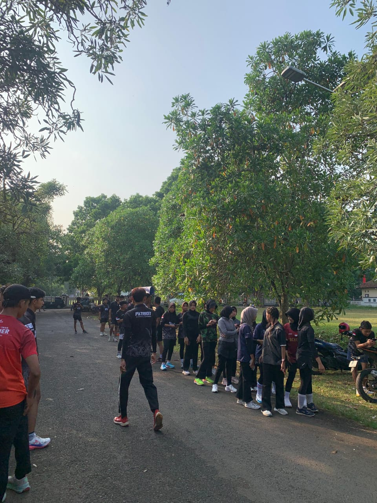
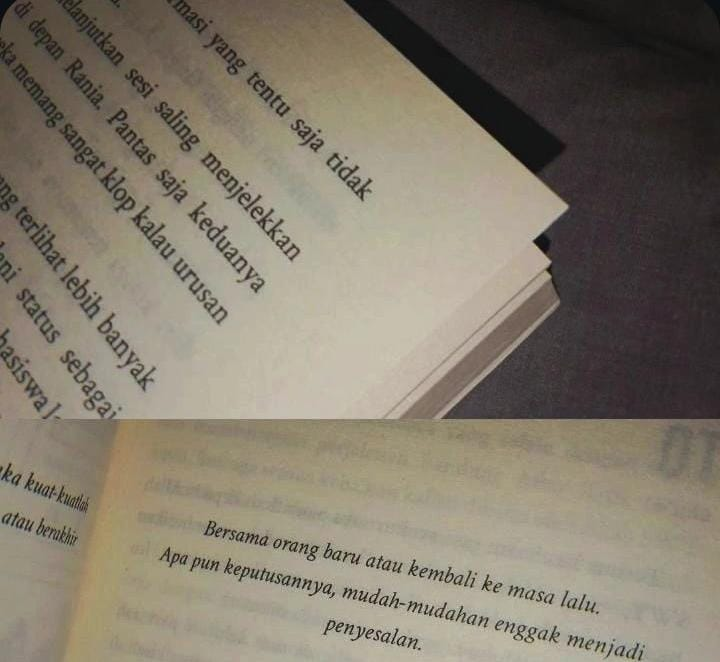

: NO: 13, RT:13,RW:13,Desa:Karanganyar, Kecamatan:Tirto ,Gg: 14 (Belakang balai desa) KARANGANYAR, KAB. PEKALONGAN, JAWA TENGAH, KODE POSE:51151
Email
: dhohikatunmustapcece@gamil.com
No. Telepon
: 0882-0032-70011
2. Data Pendidikan
PAUD
: Paud AZ-Zahra Karanganyar Tirto (2011-2012)
TK
: RA Muslimat NU Karanganyar Tirto (2013-14)
SD/MI
: MIS Kartika Karanganyar Tirto (2015-2020)
MTs
: SMP Terpadu Nurul Islam Surobayan (2021-2024)
SMK
: Ma’arif NU Tirto, Kabupaten Pekalongan
Jurusan
: Teknik Komputer dan Jaringan (TKJ)
3. Cita-cita & Motivasi
“Saya ingin menjadi pribadi yang bermanfaat bagi orang lain. Untuk itu saya berusaha belajar dengan sungguh-sungguh, menjaga sikap, dan terus mengembangkan keterampilan agar kelak bisa meraih cita-cita dan membantu keluarga maupun masyarakat.”
Cita-cita
: Taruni Pelayaran
4.Motto Hidup
: "Tidak Ada Jalan Tanpa Debu, Dan Tidak Ada Jalan Kesuksesan Tanpa Do'a Ibu"
4.📝 Visi
Menjadi pribadi yang berakhlak mulia, berilmu luas, disiplin, dan bermanfaat bagi masyarakat dengan berlandaskan nilai-nilai Islam seperti kejujuran, disiplin, dan kepedulian.
Minat & Pengalaman
5.Minat & Pengalaman
Pengalaman
Pernah bekerja paruh waktu membantu di toko kelontong selama beberapa bulan, belajar melayani pelanggan dan mengelola barang dagangan.
Minat
Gemar membaca buku dan mengikuti kegiatan olahraga untuk menjaga kesehatan dan semangat belajar.
6. Aktivitas dalam Seminggu
Senin - Jumat
Belajar dan Praktek Jaringan Komputer
Sabtu
Olahraga dan Menjaga Kesehatan
Minggu
Rehat dan Kegiatan Bersama Keluarga
Tidur
Jam tidur 8 jam untuk menjaga kesehatan tubuh
Hasil Proyek
Biodata Diri - Dhohikatun Mustapsiroh
6. Projek Matematika
Prestasi Akademik
Prestasi Non Akademik
Diagram Lingkaran Prestasi Akademik
Diagram Lingkaran Prestasi Non Akademik
Kesimpulan
Jumlah prestasi Akademik: 3 (B. Arab 99, Inggris 89, B. Jawa 86).
Jumlah prestasi Non Akademik: 2.
Prestasi Akademik lebih banyak daripada Non Akademik yaitu sekitar 60% Akademik dan 40% Non Akademik.
Aktivitas Harian & Kualitas Tidur
Diagram Batang Aktivitas Harian
Diagram Lingkaran Aktivitas Harian
8. Projek BK
Selama perjalanan pendidikan saya dari PAUD hingga SMK, saya telah mendapatkan banyak pengalaman yang membentuk karakter, kepercayaan diri, dan keterampilan saya. Saya belajar tentang disiplin, kerja keras, serta pentingnya menghargai waktu dan kesempatan.
Minat saya dalam bidang teknologi jaringan komputer muncul sejak duduk di bangku SMP ketika saya sering membantu teman dan guru mengatasi masalah perangkat lunak sederhana. Kegemaran ini semakin berkembang saat di SMK, di mana saya mempelajari Teknik Komputer dan Jaringan secara lebih mendalam.
Di luar bidang akademik, saya juga aktif berolahraga untuk menjaga kebugaran dan membentuk mental yang sehat. Saya memiliki prestasi di bidang akademik dan non akademik, seperti lomba cerdas cermat, desain poster, dan kegiatan ekstrakurikuler yang melatih kepemimpinan.
Semua pengalaman ini memperkuat motivasi saya untuk terus berkembang, mengasah potensi, dan meraih cita-cita sebagai Taruni Pelayaran yang disiplin, tangguh, dan berintegritas tinggi. Saya percaya setiap usaha yang dilakukan hari ini adalah investasi berharga untuk masa depan.
Profil Diri
9.Projek Sejarah
Saya lahir di sebuah desa kecil dengan keterbatasan fasilitas. Sejak kecil, saya sudah terbiasa membantu orang tua setelah pulang sekolah. Keterbatasan ekonomi tidak menjadi penghalang bagi saya untuk terus bersekolah.
Saat SD, saya harus berjalan kaki hampir 3 kilometer setiap hari. Meski lelah, saya selalu berusaha hadir tepat waktu. Saya juga aktif membantu teman-teman belajar dan mengikuti lomba-lomba sederhana di sekolah.
Ketika SMP, saya mulai menghadapi tantangan baru. Orang tua hampir tidak sanggup membiayai sekolah saya. Saya mencari beasiswa dan ikut program belajar tambahan gratis dari pemerintah. Dengan usaha keras, saya berhasil mempertahankan prestasi akademik dan mendapatkan beasiswa.
Di SMK, perjuangan saya semakin besar. Saya harus mengatur waktu antara belajar, membantu orang tua, dan bekerja paruh waktu di warung kecil untuk menambah uang saku. Semua itu saya lakukan dengan penuh kesabaran dan doa.
Sekarang saya sudah berada di jenjang akhir SMK. Dengan segala perjuangan ini, saya bercita-cita melanjutkan kuliah agar bisa mengangkat derajat keluarga dan bermanfaat bagi masyarakat. Saya yakin dengan kerja keras, doa, dan dukungan orang tua, cita-cita saya akan terwujud.
10.Kegiatan Olahraga & Hobi(Projek Pjok)

Running / Lari
Saya dulu berprestasi dilari, dulu saya juara 3 lomba lari Tinggkat kecamatan. Dan sekarang saya ikut running patriot dikajen.
Hobi berlari setiap pagi di sekitar rumah untuk menjaga kebugaran tubuh.

Membaca Buku
Senang membaca buku cerita dan novel di waktu senggang.
11. Projek PAI
📝 Visi
Menjadi pribadi yang berakhlak mulia, berilmu luas, disiplin, dan bermanfaat bagi masyarakat dengan berlandaskan nilai-nilai Islam seperti kejujuran, disiplin, dan kepedulian.
📝 Cita-Cita
Ingin menjadi seorang Taruni Pelayaran yang disiplin, tangguh, berintegritas tinggi, serta dapat memberikan teladan dan manfaat bagi keluarga, masyarakat, dan bangsa dengan tetap berpegang pada ajaran agama.